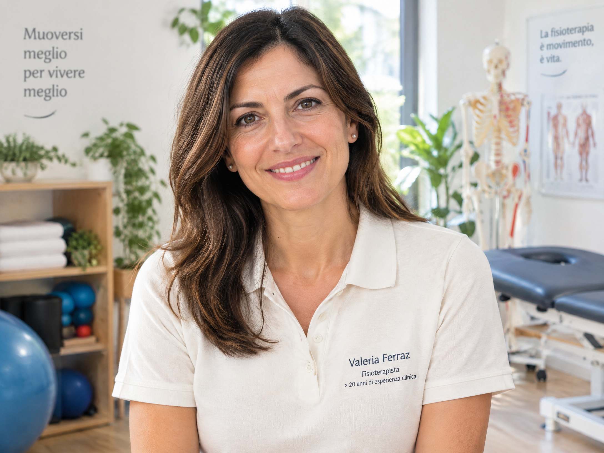
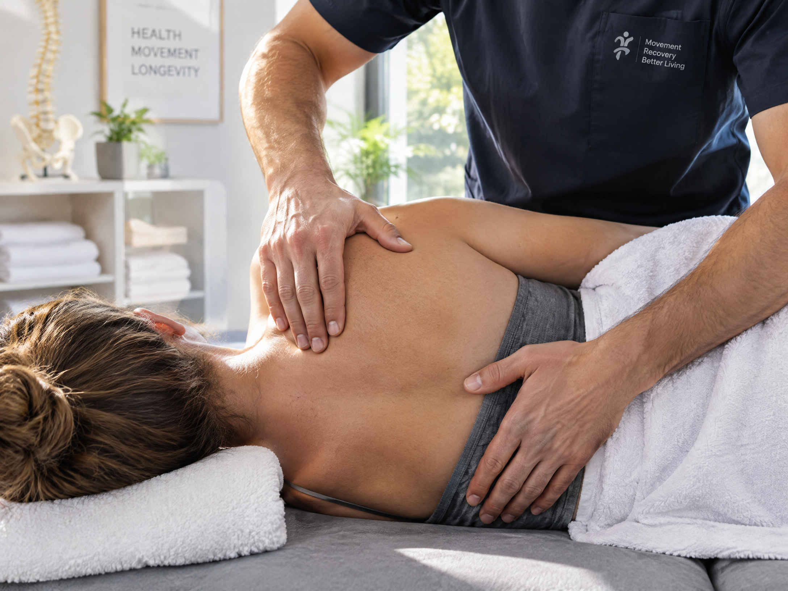
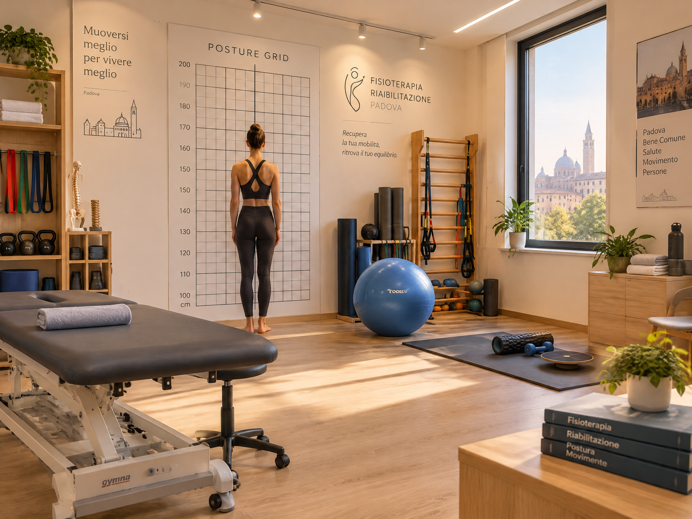
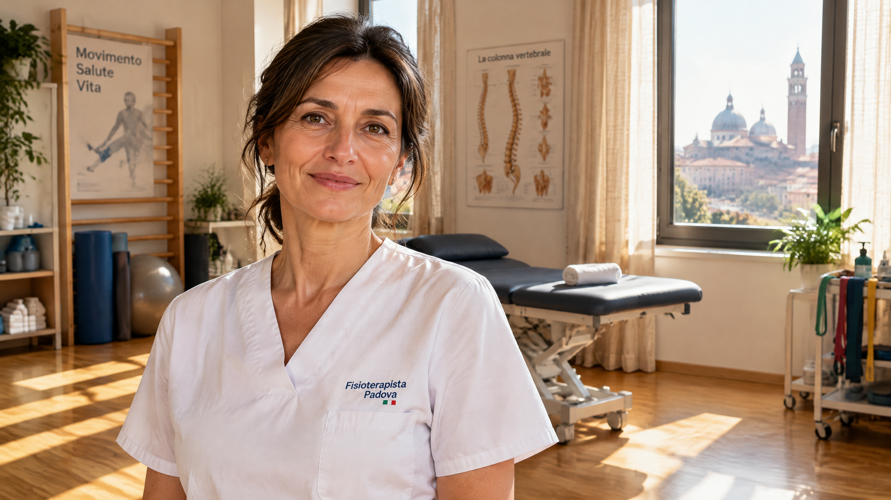

Oltre 20 anni di esperienza clinica dedicati alla riabilitazione ortopedica, neuromotoria e posturale a Padova. Un approccio empatico basato sull'evidenza scientifica e su trattamenti individuali pensati per riportarti alla tua vita attiva.

"Ascolto, precisione manuale e continuità di cura."
Non esistono protocolli uguali per tutti. Il dolore e il recupero del movimento richiedono comprensione profonda delle tue abitudini quotidiane, sportive o lavorative.
Dedichiamo il primo colloquio ad analizzare la storia clinica, il tipo di dolore, i referti diagnostici (RM, RX, ecografie) e i deficit di mobilità articolare.
Trattamento manuale mirato alle articolazioni, ai trigger points e alle fasce muscolari, combinato con esercizi terapeutici specifici per recuperare mobilità e forza.
La guarigione si consolida nel tempo: riceverai un programma di auto-trattamento ed esercizi posturali semplici da eseguire a casa o al lavoro per proteggere la schiena e le articolazioni.
Dalla fase acuta del dolore post-traumatico al recupero a lungo termine della piena efficienza fisica.

Trattamento mirato delle disfunzioni muscolo-scheletriche vertebrali. Attraverso manovre articolari e miofasciali mirate, liberiamo il movimento e riduciamo la compressione nervosa.

Allungamento delle catene muscolari retratte e riallineamento delle curve fisiologiche. Ideale per chi trascorre molte ore al computer o soffre di tensioni croniche a collo e spalle.

Accompagnamento scrupoloso nelle fasi post-intervento, in costante dialogo con il chirurgo ortopedico per un ripristino sicuro del carico e dei corretti schemi motori.
Rieducazione funzionale per esiti di ictus, neuropatie, sindromi degenerative o disturbi dell'equilibrio, con l'obiettivo di preservare e incrementare l'autonomia nella vita quotidiana.
Interventi specifici per la terza età finalizzati alla prevenzione delle cadute, al recupero della deambulazione fluida e alla gestione del dolore cronico da artrosi.
Il punto di partenza fondamentale: 60 minuti dedicati ad ascoltarti, analizzare la causa profonda del sintomo e concordare un piano di trattamento sostenibile e misurabile.
"Curare non significa solo togliere un sintomo, ma restituire fiducia nel proprio corpo."
Mi chiamo Valeria Ferraz e da oltre vent'anni svolgo con passione la professione di fisioterapista a Padova. Nel corso di due decenni di attività clinica in contesti ospedalieri, centri di riabilitazione specializzati e nella pratica privata, ho avuto il privilegio di accompagnare centinaia di persone nel superamento di traumi fisici, interventi chirurgici complessi e dolori cronici.
Credo fermamente che una riabilitazione efficace nasca da un rapporto di fiducia autentico: ogni paziente è unico, con le proprie paure, i propri ritmi biologici e le proprie aspirazioni di vita. Per questo motivo, nei miei trattamenti non applico mai schemi preconfezionati, ma integro le più recenti evidenze di terapia manuale ortopedica, rieducazione posturale ed esercizio terapeutico attivo.
Puoi telefonare, inviare un messaggio WhatsApp o compilare il modulo online per spiegare la tua problematica.
In studio esaminiamo insieme esami strumentali, postura, mobilità e palpazione per capire la vera origine del dolore.
Sedute individuali di terapia manuale, riabilitazione articolare ed esercizi guidati monitorando i progressi ad ogni incontro.
Consigli pratici posturali ed esercizi di rinforzo per preservare stabilmente i risultati ottenuti nel tempo.
La soddisfazione più grande dopo 20 anni di lavoro è vedere le persone riprendere a camminare, lavorare e fare sport con serenità.
"Soffrivo di una lombosciatalgia acuta che mi bloccava da mesi. Con la Dott.ssa Ferraz ho trovato una professionista scrupolosa, calma ed estremamente competente. Dopo 4 sedute ho finalmente ricominciato a dormire senza dolore."
"Dopo l'operazione al crociato anteriore ero molto timorosa per il recupero del ginocchio. Valeria ha saputo dosare gli esercizi con precisione millimetrica. Oggi sono tornata a correre lungo gli argini del Brenta!"
"Ho portato mia madre di 79 anni per problemi di equilibrio e artrosi dopo una brutta caduta. L'umanità, la pazienza e l'esperienza di Valeria hanno fatto la differenza. Consigliatissima."
Hai dubbi sul tuo problema o desideri concordare la data per una prima visita? Contattami direttamente o compila il modulo. Risponderò con piacere.
Trattamenti eseguiti in conformità alle normative sanitarie vigenti.